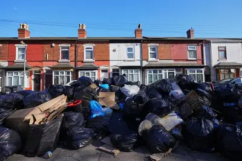

EARLY PROTOTYPE · FREE FOR CITIZENS
See it.
Report it.
Resolve it.
Fly-tipping in the lay-by. A pothole that swallows bikes. Graffiti that never goes. Report it in a minute, then follow it step by step until it is really gone.
- Photo and pin
- Every step on record
- Fixes checked, not just claimed

Rubbish bags piled on a residential street
Reported 2 hours ago
- Reported
- Picked up
- Cleared
- Verified
12 people back this
I have seen this tooHow it works
Three steps. Every one on record.
Reporting is the easy part. The hard part is knowing what happens next. Here it is written down where everyone can see it.
-
01
Snap it
Choose the type of problem, add a photo and a short note. It takes about a minute.
-
02
Pin it
Use your phone’s location or drop a pin. If it is already reported nearby, add your support instead of a duplicate.
-
03
Follow it
Every step is written to the report’s history, from “picked up” to “cleared” to “verified”.
What people report
The everyday things that wear a place down.

Fly-tipping and bagged waste
Dumped rubbish, overflowing bins and bags left on the pavement.

Litter

Roadside mess
Potholes
Damaged or broken roads
Graffiti
Vandalism on walls and signs
Abandoned vehicles
Cars left to rot
Damaged infrastructure
Lamps, barriers, bins and benches
The journey of a report
From “reported” to “really fixed”.
STEP 1
Reported
A resident sends it in with a photo and a pin.
STEP 2
Responsible body identified
A council or contractor takes it on.
STEP 3
Acknowledged
They confirm they have seen it.
STEP 4
Clearance scheduled
A date for the work is set.
STEP 5
Cleared
They say the job is done.
STEP 6
Outcome verified
Independent people confirm it is really fixed.
“Cleared” and “verified” are not the same thing. A council saying a job is done is its own word. A fix only counts as verified once it has been independently checked. Keeping the two apart is what makes the results trustworthy.
Where the project is
An early prototype, built step by step.
Working today
- Reporting with a photo and a location
- “Is this the same problem?” check
- Backing someone else’s report
- A full history for every report
- Sign-in for council and contractor staff
Coming next
- Sending each report to the right council
- Residents confirming a fix with a photo
- Help sorting reports from the photo
- Public pages comparing how quickly problems get fixed
- Storing report data in the UK
Spotted something? It takes a minute.
Help keep your area clean, and see what happens next.
Report a problem